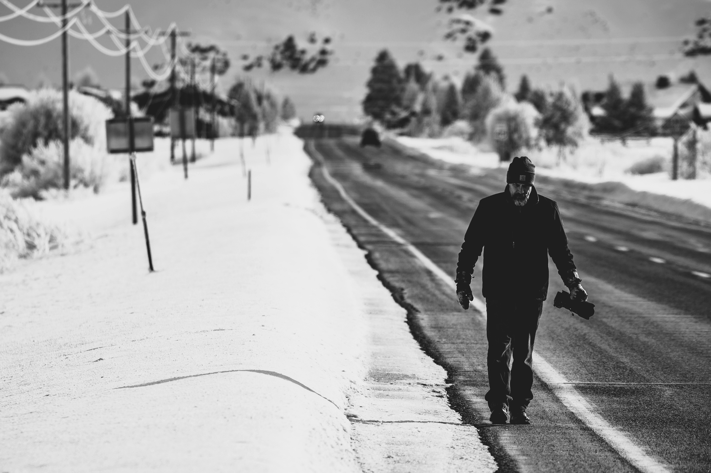
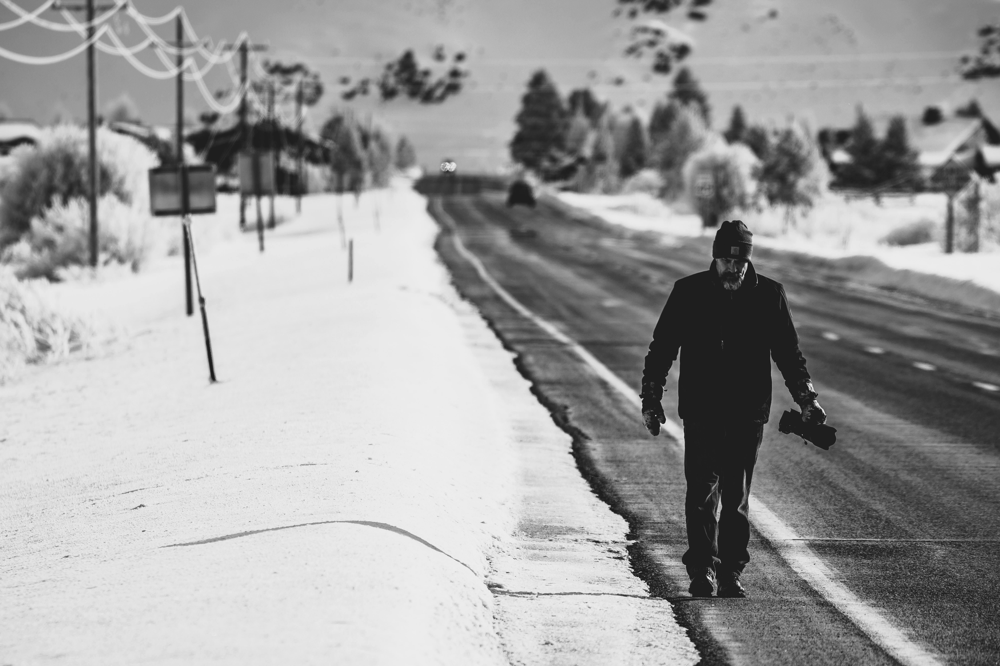
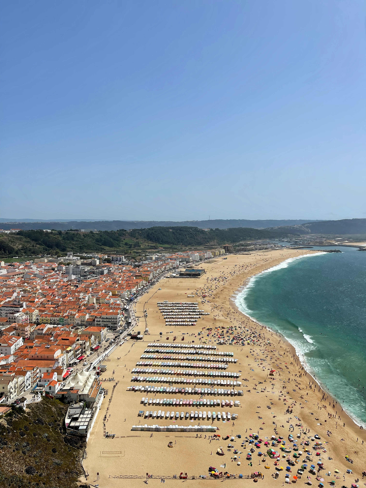
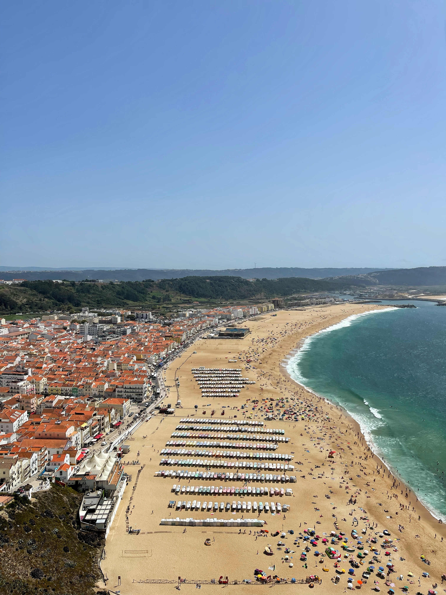

Destinos
los 23 destinos inspiradores elegidos para viajar en 2023. “Nuestros 23 mejores lugares para viajar en 2023 son una combinación de viejos favoritos que vale la pena visitar de nuevo, y regiones menos tramitadas, incluso antes prohibidas, listas para recibir a los viajeros, pero todas están unificadas por nuevas ofertas y evoluciones muy esperadas. Aquí hay algo para cada tipo de viajero, ya sea que busque excursiones extraordinarias a través de antiguas selvas tropicales, una floreciente escena culinaria o deslumbrantes calendarios culturales repletos de música de clase mundial y exhibiciones de arte poco comunes”, apuntó la tradicional revista de viajes. Y agregó: “También creemos que hay más que une que separa estos lugares: una oportunidad para un compromiso más rico con las comunidades locales, viajes más lentos y una conexión humana más significativa y alegre. ¿Qué podría hablar mejor de lo que esperamos para el próximo año?”


 

 
